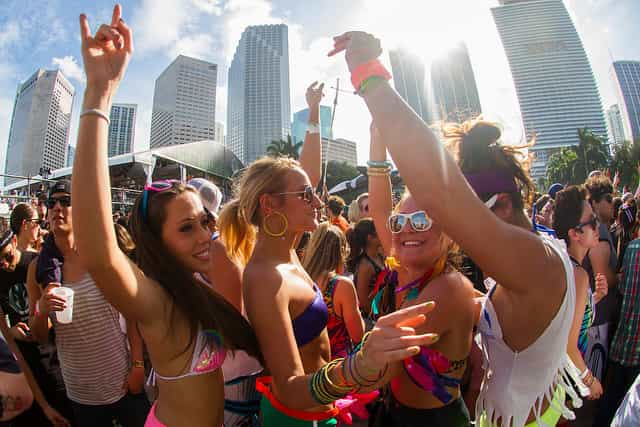

If you’re a music fan you’re likely checking out a festival this summer season. Here are a few tips to get the most out of your experience:
Many festivals (e.g. Lollapalooza, Outside Lands) take place in the heart of major cities. Use Airbnb or Craigslist to rent a private apartment, or at least a room with some privacy. If you’re in an unfamiliar city, your first instinct will be to get a place close to the festival. Fight this urge — the better move is to book closer to the area of maximum nightlife in the city. If you can find a cheap hotel then do it, but keep in mind that they fill up fast and often are farther away from nightlife.
I was overwhelmed by the sheer mass of people the first time I attended Lollapalooza. People will line up an hour beforehand to get a prime spot even for less popular bands, and the crowds increase exponentially as the day goes on. Accept that you’re not going to be front-and-center for every band you see. Determine the 2-3 shows you want to be close for, and arrive at least an hour before showtime. At multi-stage festivals it can take up to 30 minutes to get from one end of the festival grounds to the other, so keep this fixed cost in mind when deciding whether to bounce from stage to stage. For latecomers, it’s easier to worm your way to the front of the crowd if you’re with a cute girl, but you’ll still get a lot of shitty looks and random elbows thrown your way.
If there’s anything that will enhance your personal festival experience — alcohol, drugs, etc. — bring it. The security at the entrance is typically concerned only with whether you have a weapon. They will rarely care about your flask, joint in a sunglasses case, etc. Don’t be careless, but you’re not going to get a TSA-level search when there are 50,000 other people waiting to get in.
If you are a drinker, you absolutely need to bring a flask and a bottle of liquor to refill it each night — this will save you $40-$50 worth of expenses each day. A flask is a necessity even if money is no object for you. Why? Beer is the main alcohol offering at many festivals, and to get reasonably intoxicated you have to consume lots of liquid. This will force you to take frequent bathroom trips and lose the best spots for your favorite bands. Repeat after me: “My flask is my friend.”
I’m not a drug user, but if you enjoy entertainment of the chemical variety it’s fairly easy to bring them in in a sunglasses case or pocket. Worst case scenario, you stick them in your underwear as you walk through the door. Security once inside is almost non-existent, and if you’re not bothering anyone else you will not be hassled for smoking pot, tripping, or whatever your heart desires.
Some people bring water bottles, but don’t do this. There are refilling stations where you can re-use bottles you buy in the festival if you’re concerned about saving money. This beats walking around all weekend toting a cumbersome (and goofy) Camelbak.

First, the good news. There are a TON of young girls at these festivals. If you’re over the age of 25, you are bound to feel old at least a few times during the weekend. There is a lot of great scenery and an unlimited number of approach opportunities.
The bad news is that it’s difficult to pick up at most concerts. Though you are surrounded by young supple flesh, girls are with their friends and are more interested in displaying their scenester cred and “YOLO”ing than forming a connection with a stranger.
At Lollapalooza there is always a tent with electronic dance music. This is your best bet if you’re looking to hook up, though you may have to put up with shitty music in the process. The rave-like atmosphere and mind-altering substances most people are on will make it easier to approach and escalate.
In the trenches of the normal rock shows, you have to grind out approaches and talk to everyone. You will at least meet interesting people and get tips on good bands while beating the bushes for prospects. Once you find reasonable targets, it helps to offer material value rather than just your personality. This seems counterintutive and “beta,” but unless you are fantastically good looking, girls have short attention spans at these events. It’s amazing how impressed young girls are with booze and weed, so just charge some sharing to the game. If you’re in a camping festival, sealing the deal will be easier due to the Vegas-like, removed-from-the-real-world atmosphere. Treat this more like a club pickup where you live across the street.
When people disperse at night from a city festival your prospects often dry up. Remember the logistics from earlier? If you have prospects from the day, suggest bouncing to your rented apartment or hotel room for an afterparty, or pregaming going out in the city. If you aren’t able to get any solid leads during the festival you’re still in business. Go home to clean up, and then hit the town near the centrally-located apartment you rented. Pillage the local women as you would otherwise.
Get a cool place. Pick your favorite bands. Talk to everyone. Bring a flask. Share your goodies. Enjoy the city. Find good food. Run your normal game. Pickup or not, you’re set for a memorable weekend.